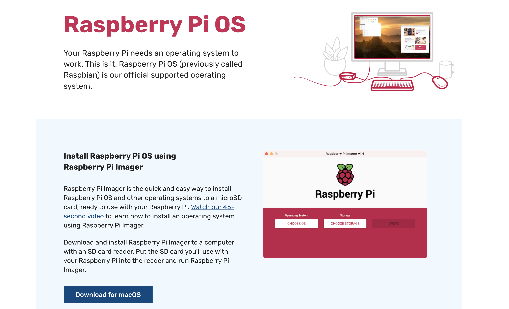
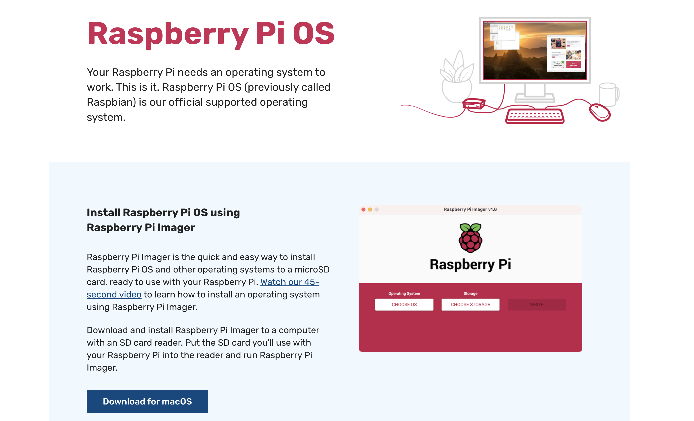

To install Raspberian follow use instructions on the Rasperry Pi Foundation website.


If you click on
After the OS is installed, slot the sd card into the raspberry pi and start it up. You should see a red LED and a yellow LED flash up. Within about 5 min your raspberry pi should have connected to the WIFI.
There are several ways of checking your pi has connected. Fing is a useful and user friendly app, which you can download on your phone to check all the pis that are connected to the WIFI. Make sure you see your Raspberry Pi (with the right name) show up.
CMD + SHIFT + x while running the Raspberry Installer it opens a menu with allows you to set up ssh and wifi in GUI.
After the OS is installed, slot the sd card into the raspberry pi and start it up. You should see a red LED and a yellow LED flash up. Within about 5 min your raspberry pi should have connected to the WIFI.
There are several ways of checking your pi has connected. Fing is a useful and user friendly app, which you can download on your phone to check all the pis that are connected to the WIFI. Make sure you see your Raspberry Pi (with the right name) show up.
Make sure your Raspberry Pi has ssh enabled and is connected to the wifi.
Now you can use ssh to connect to your pi from your personal computer.
For example: check your Pis IP address on Fing.
Then connect by typing:
This command will prompt you for a password. I will provide this for you.
ssh pi@raspberrypi.192.168.1.124
This command will prompt you for a password. I will provide this for you.
Pip3 is a package manager which allows you to install various python libraries.
Open the terminal pip3 should already be preinstalled on your pi.
You can check by running:
You should see an output similar to this:
Now use pip3 to install gpioZero using pip3.
pip3 --version
You should see an output similar to this:
pip 22.0.4 from /usr/local/lib/python3.9/site-packages/pip (python 3.9)
Now use pip3 to install gpioZero using pip3.
The gpioZero library docs contain a great diagramme and explanation of the pins on a Raspberry Pi.
We will make use of these pin to start and stop the pump to water the plant.
You will notice in the diagramme below that there are 3 different types of pins: Power pins (3V or 5V), pins for grounding (Ground),
and GPIO pins. We will make use of all three types.
The gpioZero library docs explain how to activate an LED, which is attached to GPIO17.
Check if you can locate the right pin on your Raspberry Pi. We will be using this same concept in our next step to write a script to activate the pump.

source: gpiozero documentation
source: gpiozero documentation
We will be writing this script in Python3, a versatile programming language, which is already pre-installed on your Raspberry Pi.
In your Raspberry's terminal create a new file by typing the command:
Now let's open the file, we've created and start writing some code. You can use the editor vim to open and write to the file.
Now type "i" to start vim's writing mode
inside vim type:
We want to make use of the gpioZero library, so the first thing is to import the library. At the top of your file type:
We want to activate the pump, but only leave it turned on for a second to make sure we aren't overwatering. In order to do this we'll need to import time.
Now we're set up with our imports. Next, we'll need to choose and setup a pin to use.
Now let's increase the voltage on our GPIO 17 pin to activate the pump:
Let's keep the pump on for one second to sufficiently water the plant. We can do this by freezing time for a moment.
Finally let's turn off the pump by decreasing the voltage and cleanup.
Please find the full script here. Well done! The only thing left to do is closing vim (which even some experienced Software Engineers find challenging ;) ) In order to close vim type: first Esc, then : (colon) followed by wq and press enter.
touch pump.py
Now let's open the file, we've created and start writing some code. You can use the editor vim to open and write to the file.
sudo vim pump.py
Now type "i" to start vim's writing mode
inside vim type:
i
We want to make use of the gpioZero library, so the first thing is to import the library. At the top of your file type:
import RPi.GPIO as GPIO
We want to activate the pump, but only leave it turned on for a second to make sure we aren't overwatering. In order to do this we'll need to import time.
import time
Now we're set up with our imports. Next, we'll need to choose and setup a pin to use.
GPIO.setmode(GPIO.BCM)
print("setup successful")
GPIO.setup(17, GPIO.OUT)
Now let's increase the voltage on our GPIO 17 pin to activate the pump:
GPIO.output(17, GPIO.HIGH)
Let's keep the pump on for one second to sufficiently water the plant. We can do this by freezing time for a moment.
time.sleep(2)
print("pump signal successful")
Finally let's turn off the pump by decreasing the voltage and cleanup.
GPIO.output(17, GPIO.HIGH))
GPIO.cleanup()
print("clean up successful")
Please find the full script here. Well done! The only thing left to do is closing vim (which even some experienced Software Engineers find challenging ;) ) In order to close vim type: first Esc, then : (colon) followed by wq and press enter.
ESC : wq ENTER
Great Work! You've written a python script to control the pump. Now let's use it.
First locate a 5V Power pin, a Ground pin and GPIO 17 on your Raspberry pi.
You can use the diagramme, which can be found in a previous step.
Now plug 3 female to female jumpers on these pins (ideally use different colours to avoid confusion).
I tend to use red for 5V, black for the ground and any other colour for the GPIO pin.
Now connect the relay. You can use the image below as a guide.
You will need to connect the red 5V cable to your plus wire, the ground to the minus and the GPIO to the one called
S.
This is a good point to stop for a moment and test your code.
Go back to your terminal and run the command.
You should see a small LED on the relay flash up for 2 seconds. This means we have correctly connected all pins and the relay receives a high voltage signal for 2 seconds from GPIO 17.
python3 pump.py
You should see a small LED on the relay flash up for 2 seconds. This means we have correctly connected all pins and the relay receives a high voltage signal for 2 seconds from GPIO 17.
Troubleshooting
In case you didn't see the LED flash, then make sure to double check your script is written correctly and all your cables are connected to the right pins.
Can you see any errors in the terminal console (see image below for an example), then it might be your script that's wrong.
Is that script running fine and you can see all the log statements we added show in your terminal, then it might a matter of the cables being connected to the wrong pins.
Now it is time to finally connect your pump. You will need to use a tiny screw driver to untighten screws on the other side of the relay. Every relay as a normally open and normally connected circuit.
The normally connected circuit is always connected, which means that if we were to connect the pump and battery normally connected they would always run.
The normally open circuit on the other hand, only connects when it receives a high voltage signal. This is the one we're interested in.
We only want the pump to start for 2 seconds.
Make sure to connect the red wire of the pump and the black wire of the battery in an normally open circuit to the relay.
Now it is time to test your work. Run the following python command again to give a high voltage signal to the relay,
which should close the circuit between battery and pump for 2 seconds and start the pump.
Were you successful? Awesome, well done! You've built a watering system.
python3 pump.py
Were you successful? Awesome, well done! You've built a watering system.